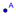

La Vista Gráfica (a la derecha)
expone gráficamente la representación de objetos matemáticos (como puntos,
vectores, segmentos, polígonos, funciones, curvas, rectas y secciones cónicas).
Cuando el ratón (o mouse)
se desplaza sobre un objeto, éste se ilumina y se despliega un letrero rodante
con su descripción.
GeoGebra
reacciona de distinta manera frente a cada entrada de mouse o ratón según la herramienta y el modo en que se estuviera
operando en la Vista Gráfica (ver, al respecto, la sección Herramientas
de Construcción). Por ejemplo, un clic
en Vista Gráfica puede crear un
punto nuevo (ver herramienta  Punto Nuevo),
fijar la intersección entre objetos (ver herramienta  Intersección
de Dos Objetos) o trazar una circunferencia (ver herramientas correspondientes
a la Circunferencia).
Intersección
de Dos Objetos) o trazar una circunferencia (ver herramientas correspondientes
a la Circunferencia).
Atención: Un doble clic sobre un objeto en la Vista
Algebraica abre su campo de edición que permite se modifique su valor si
fuera un objeto libre y que se lo redefina, si fuera dependiente.